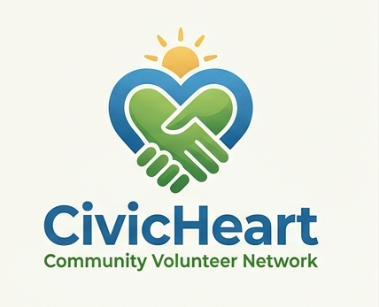

Beach Cleanup
Join us for a morning of cleaning Nyali Beach and protecting our coastal ecosystem. All supplies provided.
Date: Saturday, 9 August 2026 | Location: Nyali Beach, Mombasa
Time: 7:00 AM - 11:00 AM | Spots remaining: 12

Connecting willing hands with community needs
Find an activity that matches your interests and availability — every contribution makes a difference!
Join us for a morning of cleaning Nyali Beach and protecting our coastal ecosystem. All supplies provided.
Date: Saturday, 9 August 2026 | Location: Nyali Beach, Mombasa
Time: 7:00 AM - 11:00 AM | Spots remaining: 12
Help local primary school students with homework and reading skills. No teaching experience required — just patience and enthusiasm!
Date: Every Monday & Wednesday | Location: Mvita Community Library
Time: 3:30 PM - 5:30 PM | Spots remaining: 8
Assist medical professionals with registration, crowd management, and health education at a free community screening event.
Date: Saturday, 16 August 2026 | Location: Kisauni Health Center
Time: 8:00 AM - 2:00 PM | Spots remaining: 5
Spend time with elderly residents in a local care home — reading, chatting, or playing games. Your presence brings joy!
Date: Every Saturday | Location: Golden Years Retirement Home
Time: 10:00 AM - 12:00 PM | Spots remaining: Unlimited
Help with setting up booths, guiding attendees, and managing activities at our biggest community celebration of the year!
Date: Saturday, 23 August 2026 | Location: Uhuru Gardens
Time: 9:00 AM - 6:00 PM | Spots remaining: 20